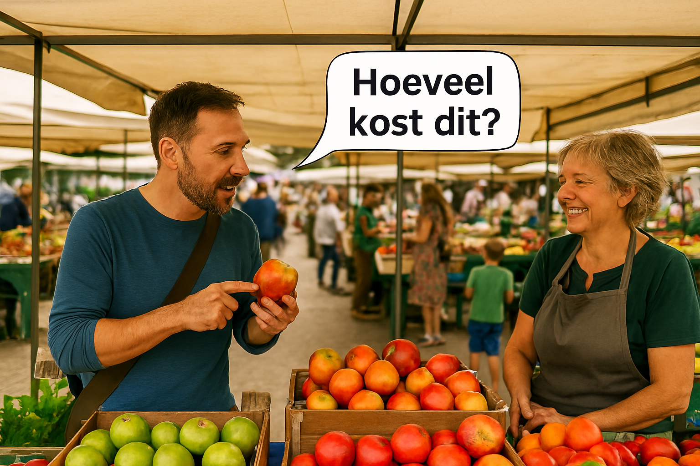
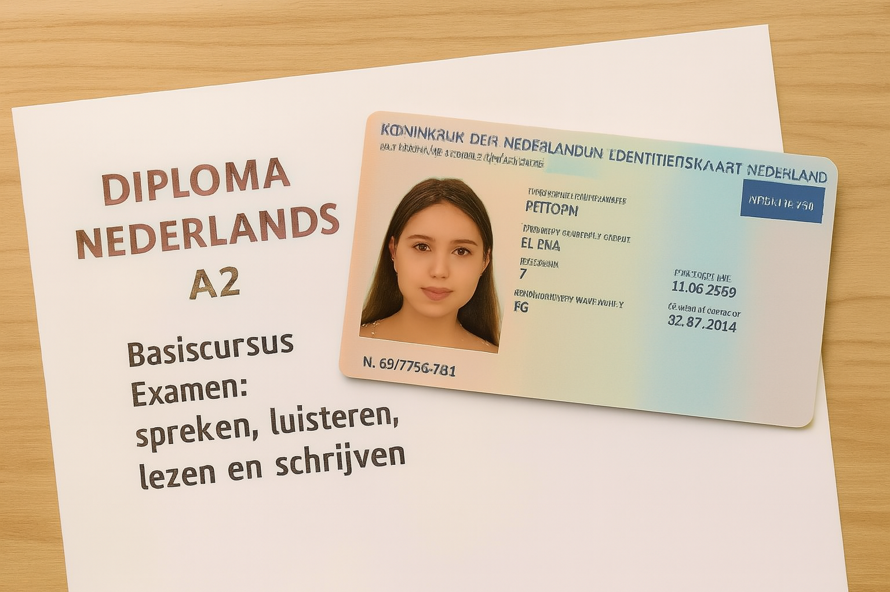

Learning Dutch is more than memorizing words — it helps you feel at home, use public services,
chat with neighbors, join local events, and connect with Dutch culture and society.
It's also essential for integration, permanent residence, and citizenship.
Language skills that elevate your career.
Boost Your Career Opportunities
Dutch is key to unlocking professional growth. Many employers value Dutch proficiency,
and speaking the language helps build stronger relationships with colleagues and clients.
Access to more job listings
Easier networking opportunities
Confidence in meetings and presentations
Eligibility for Dutch-language training programs

“Hoeveel kost dit?” — How much does this cost?
Navigate Daily Life with Ease
Dutch helps you read signs, understand receipts, and communicate clearly. It empowers you to ask for help,
understand rental contracts, use public transport, and make phone calls with confidence.
Build Real Connections
Language fosters friendships, shared laughter, and deeper understanding.
Speaking Dutch helps you form meaningful relationships and feel truly connected.

Diploma Nederlands als tweede taal
Dutch for Citizenship
To become a Dutch citizen, you'll need to pass the Civic Integration
Exam (Inburgeringsexamen) and reach at least A2 level proficiency.
Learning Dutch is a key step toward obtaining your diploma and building a future here.